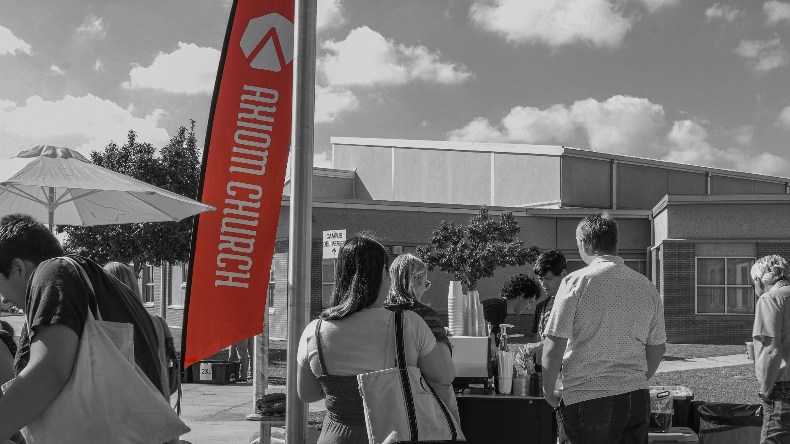

Whatever makes you comfortable. Most people dress casually.
Sunday at 10 AM
We'll save you a seat.
Camacho Elementary · 501 Municipal Dr · Leander, TX 78641

Come as you are
Your first Sunday.
Arrive about 10–15 minutes early. Our team will help you find parking, check in your kids, and grab coffee before a 65–70 minute service with music and practical Bible teaching.
Good to know
No surprises.
Axiom Kids serves ages 0 through 5th grade with secure check-in and
background-checked volunteers.
No. You will never be singled out or pressured. Observe, ask questions, and move at
your own pace.
We take it seriously. Coffee is free and ready before service.